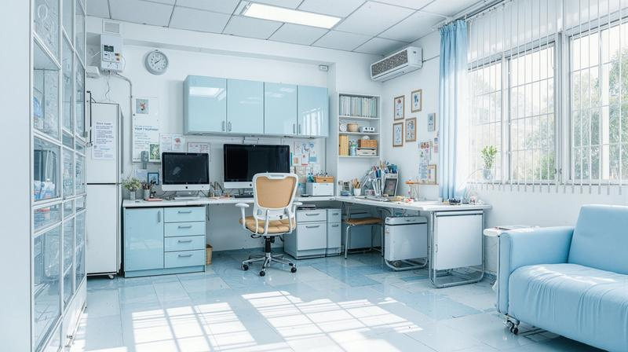

「安全、清潔、安心」
診療器具は患者様ごとに滅菌し、院内の手指が触れる範囲は頻回に消毒清拭しています。患者様の医療安全を第一に考えています。
歯科一般・小児歯科・矯正歯科・歯科口腔外科。「安全、清潔、安心。」を合い言葉に、お子さまからご年配の方まで通っていただけます。土日も診療しています。
診療器具は患者様ごとに滅菌し、院内の手指が触れる範囲は頻回に消毒清拭しています。患者様の医療安全を第一に考えています。
お子さまの歯の健康を、歯磨き指導や予防から支えます。矯正歯科の無料相談日も設けています。

平日お忙しい方も、土曜・日曜に受診いただけます。当院は予約制です。急患の方はまずお電話でお問い合わせください。
フードスクエアカスミ牛久店内にあるので、お買い物のついでに立ち寄れます。車でのご来院にも便利です。
当院は予約制です。休診日：水曜日・祝日（臨時休診はホームページにて前もってお知らせします）。
| 診療時間 | 月 | 火 | 水 | 木 | 金 | 土 | 日 |
|---|---|---|---|---|---|---|---|
| 午前9:00〜13:00 | ○ | ○ | ／ | ○ | ○ | ○ | ○ |
| 午後平日 14:30〜18:30 土日 14:00〜16:00 |
○ | ○ | ／ | ○ | ○ | ○ | ○ |

当院では、患者様の医療安全を第一に考えております。その上で、安心して診療を受けられる、通える、行ってよかったと思える歯医者さんでありたいと思っています。よろしくお願いいたします。
院長 小川 徹
※元サイトの掲載情報です（要確認）。日程はお電話でご確認ください。
当院は予約制です。ご希望の日時をお電話でお知らせください。急患の方も、まずはお電話にてご相談ください。
受付時間 平日 9:00〜13:00 / 14:30〜18:30 土日 9:00〜13:00 / 14:00〜16:00
休診 水曜日・祝日